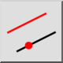
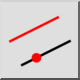
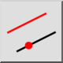
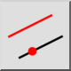

a 平行線（通過点指定）
ツールバー/アイコン:
 

メニュー: D 描画 > L 線分 > a 平行線（通過点指定）
ショートカット: L, G
コマンド: lineparallelthrough | lineoffsetthrough | parallelthrough | lg
ツールバー/アイコン:
 

メニュー: D 描画 > L 線分 > a 平行線（通過点指定）
ショートカット: L, G
コマンド: lineparallelthrough | lineoffsetthrough | parallelthrough | lg
このツールで、平行線あるいは同心の弧および円を作成できます。
並列か同心の弧か円は与えられたポイントを通過します。